M1:
Piggott's
Manor/Bhaktivedanta Manor, Letchmore Heath
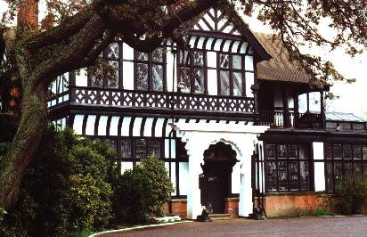
DEPARTMENT S: The Bones of Byrom Blain (Paul
Dickson: April 1969)
Byrom Blain's Rolls Royce arrives at the house at Marling Dale and is
met by an reception committee. The chauffeur opens the door for Byrom
only to find a skeleton.
RANDALL AND HOPKIRK
[DECEASED]: Murder
Ain't What It Used To Be! (Jeremy Summers:
Summer 1969)
Jeff's car arrives at Kirstner's house, and is later joined by
Kirstner's enemies who lie in wait for the owner's return.
Films:
FEAR IN THE NIGHT
(1972)
M2: The Three Horseshoes and village green, Letchmore Heath
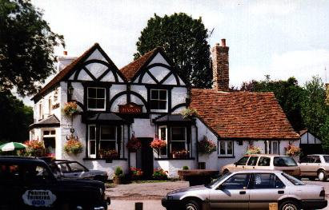
SABER OF LONDON:
The Killer and The Kid
(1957)
The police searching for William Masters depart from the village to
begin their manhunt.
SABER OF LONDON:
Death Hides Out (Max
Varnel: 1957/59)
Mark Saber goes to interview Fenning at the tavern in Pensholt.
THE SAINT: The Invisible Millionaire
(Jeremy Summers: Autumn 1962)
Simon Templar's Volvo arrives at the pub so he can meet Nora Prescott.
THE AVENGERS: Man-Eater of Surrey Green
(Sidney Hayers: May 1965)
Mrs Peel (Diana Rigg) arrives at a village pub in
her Lotus Elan. Steed
(Patrick Macnee), Mrs Peel and Dr. Sheldon (Athene
Seyler) arrive at
the deserted village in the Lotus.
THE BARON: The Persuaders (Jeremy
Summers:
October 1965)
The Baron's Jensen drives into Lindley village and parks outside the
Three Horseshoes and The Baron goes inside. Templeton-Green arrives the
following morning in his Volkswagen camper and enters the pub.
THE BARON: Enemy of the State (Jeremy
Summers: December 1965)
The village can be seen on back projection as the secret police drive
John Mannering towards the border, when Comrade Szoblik leaves for a
meeting and when Colonel Buchoiz and Cordelia drive towards the border.
THE AVENGERS: A Sense of History (Peter
Graham Scott: January 1966)
Broom's car drives towards St. Bodes' University (leaving
Letchmore
Heath heading south).
THE BARON: The Maze (Jeremy
Summers: June
1966)
The village can be seen on back-projection as Cordelia helps the Baron
retrace his steps and as the motorcade leaves the village along Elstree
Road.
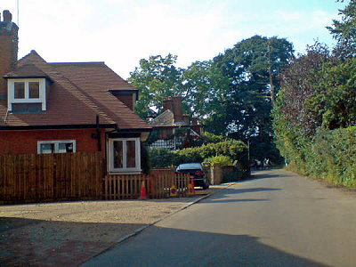
THE SAINT: The Fast Women (Leslie
Norman:
September 1966)
Letchmore Heath - As soon as he gets to his hotel room Karl Tordoff he
tests the sights of his gun.
THE BARON: Countdown (Robert
Asher:
October 1966)
The village can be seen on back projection as The Baron and Cordelia
drive through the countryside.
THE CHAMPIONS: Operation Deep-Freeze (Paul
Dickson: April 1967)
Whilst Richard drives his car in the country the village can be seen in
back projection.
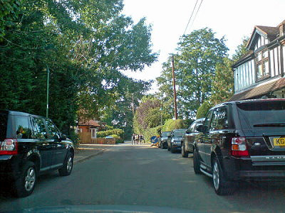
THE AVENGERS: Death's Door (Sidney
Hayers:
June 1967)
The houses on Grange Road on the way out of the village appear as back
projection for Melford's car as he and Steed drive to the conference
and later as Steed and Mrs Peel follow the route to the conference
centre.
THE AVENGERS: Dead Man's Treasure (Sidney
Hayers: July 1967)
At Mithering, the sign of the pub 'The Vaults' bears the next clue for
Steed (Patrick Macnee), Penny (Valerie
Van Ost), Mrs Peel (Diana Rigg),
Mike (Norman Bowler), Carl (Neil McCarthy)
and Alex (Edwin Richfield).
(Spotted by Michael Richardson, 1989)
THE CHAMPIONS: The Fanatics (John
Gilling:
July 1967)
The village is seen in back-projection as Richard Barrett, posing as
Carson, is driven away by military police.
THE SAINT: Where the Money Is (Roger
Moore: Summer 1968)
As a blindfolded Simon Templar is taken to see Jenny the village can be
seen through the rear window.
DEPARTMENT S: Handicap Dead (John
Gilling:
Summer 1968)
On the way from the airport the Ford van travels through a village
(Back Lane).
DEPARTMENT S: The Pied Piper of Hambledown
(Roy Ward Baker: Summer 1968)
Jason King investigates the village of Hambledown to discover the
extent of the disappearances.
JOURNEY TO THE UNKNOWN:
Do Me A Favor and Kill Me
(Gerry O'Hara: 1968)
Jeff Wheeler (Joseph Cotton) visits the Letchmore
Newsagency (now a
private house) and the pub, but he is followed. Later Faith
Wheeler
makes a call to the telephone box by the pond where a man is waiting to
answer.
(Spotted by Michael Richardson, 1989)
RANDALL AND HOPKIRK
[DECEASED]: A
Sentimental Journey (Leslie Norman: July 1968)
The village can be seen on back-projection as Dandy drives away with
Marty on board her car.
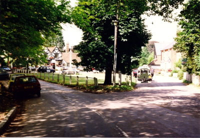
THE AVENGERS: Requiem (Don Chaffey:
January
1969)
Searching for Steed's hideout, Firth (John Cairney)
and Barrett (Mike
Lewin) drive around the village green and later stop outside
their
first large house.
(Spotted by Michael Richardson, 1989)
DEPARTMENT S: The Bones of Byrom Blain (Paul
Dickson: April 1969)
Annabelle drives her red Lotus Elan to the Nag’s Head to warn Jason
(Common lane to Back Lane). Later the van carrying
Wilber Smith’s crate
from London Airport drives along Back Lane.
RANDALL AND HOPKIRK
[DECEASED]: A
Disturbing Case (Ray Austin: Summer 1969)
The Zephyr arrives by the village pond and Jeff and Marty alight.
HERE COME THE DOUBLE DECKERS!:
Tiger Takes Off (Harry
Booth: 1969)
The hovercraft with Tiger (Debbie Russ) aboard
heads towards the pond
with Scooper (Peter Firth), Spring (Brinsley
Forde), Billie (Gillian
Bailey), Brains (Michael Audreson),
Doughnut (Douglas Simmonds) and
Sticks (Bruce Clark) in hot pursuit.
HERE COME THE DOUBLE DECKERS!:
The
Go-Karters (Harry Booth: 1969)
Spring (Brinsley Forde) ends up in the pond when
his Go-Kart crashes.
HERE COME THE DOUBLE DECKERS!:
Happy
Haunting (Harry Booth: 1969)
Albert drives the rest of the gang to visit a stately home in the
country.
THE PROTECTORS:
...With a Little Help From my Friends (Jeremy Summers: 1972)
Chino parks the Rolls carrying the kidnapped President under the trees
by the pond.
Films:
THE STRANGE WORLD OF PLANET X
(1957)
UP THE CREEK (1958)
VILLAGE OF THE DAMNED
(1960)
THE HOUSE THAT VANISHED
(1974)
NOT NOW COMRADE (1976)
M3: The Institute of Grocery Distribution, Letchmore Heath Road, Letchmore Heath, Letchmore Heath
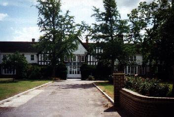
RANDALL AND HOPKIRK
[DECEASED]: Whoever
Heard of a Ghost Dying? (Ray Austin: Late 1968)
The police arrive at Lord Manning's house followed by Jeff in his car.
RANDALL AND HOPKIRK
[DECEASED]: A
Disturbing Case (Ray Austin: Summer 1969)
Jeff arrives at the Lambert Clinic Nursing Home in Jeannie's Mini, and
later Marty guides him to leave in his stolen Zephyr.
Television:
THE WORKER: Breed In for Strength Breed Out for Stamina
(1965)
M4: Aldenham Grange, Letchmore Heath Road, Letchmore Heath
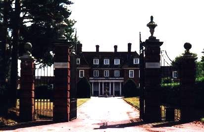
THE HUMAN JUNGLE:
Skeleton in the Cupboard
(Roy Baker: June 1964)
Dr. Corder (Herbert Lom) arrives at Lady Harriet
Bridley's house and is
met by Miss Agnes Brindley (Sonia Dresdel) her
sister-in-law. They
discuss the rose bed and the sanity of Harriet's late husband. A few
evenings later, Corder returns with his daughter, Jennifer (Sally
Smith), and her dog, Chaucer, to call on Harriet and Agnes.
THE AVENGERS: The Hidden Tiger (Sidney
Hayers: January 1967)
The home of Sir David Harper who dies in mysterious circumstances.
(Identified by Sam Mitchell, May 2000)
THE AVENGERS: Split! (Roy Ward
Baker: January
1968)
After Tara King is captured and drugged by Himel, an accomplice drives
off in her AC 427 and an ambulance appears out of a nearby driveway to
take her away.
DEPARTMENT S: The Pied Piper of Hambledown
(Roy Ward Baker: Summer 1968)
Stewart Sullivan (Joel Fabiani) drives up to Loring
Hall whilst
investigating the disappearances of the villagers of Hambledown. He
notices a figure at an upper window so when he drives off he parks
around the corner and returns. Later Jason King (Peter
Wyngarde) and
Annabel Hurst (Rosemary Nicols) break into the Hall
to check out
Colonel Loring's car for traces of an accident.
JOURNEY TO THE UNKNOWN:
Paper Dolls (James
Hill: 1968)
Craig Miller and Jill Collins visit Bart Brereton's house to talk about
his grandson.
RANDALL AND HOPKIRK
[DECEASED]: Whoever
Heard of a Ghost Dying? (Ray Austin: Late 1968)
The photograph of the 'Gang's Hideout' shown to Jeff by Hellingworth
was taken here.
THE AVENGERS: Requiem (Don Chaffey:
January
1969)
Searching for Steed's hideout, Firth (John Cairney)
and Barrett (Mike
Lewin) look at their first large house.
JASON KING: An Author in Search of Two Characters
(Cyril Frankel: 1970)
Eve is followed to Manor Park House by Claire, who returns with Jason.
Having switched places with Strong, Jason leaves later with Eve and
Ackroyd.
THE ADVENTURER:
The Good Book (Director
Cyril Frankel)
Gene Bradley (Gene Barry) and Mr Parmiter (Barry
Morse) walk around the
exterior of a villa in the south of France discussing Armand (John
Moffat) and the secret code book.
(Spotted by Jaz Wiseman, January 2005)
THE PROTECTORS:
...With a Little Help From My Friends (Jeremy Summers: 1972)
Harry Rule and the former Laura Rule arrive at Kahan's house to meet
their son's kidnappers.
M5: Letchmore Heath Road/Summerhouse Lane Junction, Patchett's Green
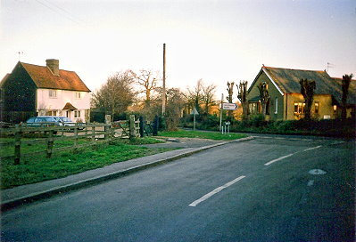
THE SAINT: The Chequered Flag (Leslie
Norman: February 1965)
As Simon drives Mandy Ellington to Hunter’s Surrey bungalow in his
Volvo.
THE AVENGERS: Split! (Roy Ward
Baker: January
1968)
Tara passes the junction as she takes Rooke in her AC 427 to Lord
Barnes' house.
DEPARTMENT S: The Pied Piper of Hambledown
(Roy Ward Baker: Summer 1968)
Jason King and Stuart Sullivan arrive at Doctor Brogan's house
(Crossways Cottage) in order to find out what he had
injected into
Susan Lewis' arm.
M6: Aragon, Elstree Road, Letchmore Heath
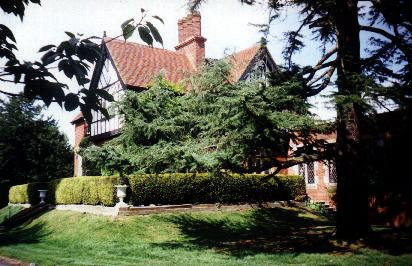
THE BARON: The Seven Eyes of Night (Robert
Asher: April 1966)
The wall to Aragon can be seen on back projection as Jeff Walker and
the other villains leave the scene of the crime.
THE BARON: Time to Kill (Jeremy
Summers:
May 1966)
The wall to Aragon can be seen on back projection as The Baron drives
to The Carreras Institute. Night-time back projection of Letchmore
Heath and Aldenham Road used for sequences featuring
conversations in car interiors.
THE BARON: Night of the Hunter (Roy
Baker:
July 1966)
The wall to Aragon can be seen on back projection in the villains' car
as they chase The Baron.
THE AVENGERS: Death's Door (Sidney
Hayers:
June 1967)
The house and road appear as back projection for Melford's car as he
and Steed drive to the conference.
DEPARTMENT S: The Bones of Byrom Blain (Paul
Dickson: April 1969)
A ford van arrives from the airport carrying a chest to the house where
Sir Curtis is being held. As the van leaves Sullivan enters the house
via a drain pipe.
DEPARTMENT S: Handicap Dead (John
Gilling:
Summer 1968)
Sullivan arrives at The Pines, Rickmansworth, to talk to Mrs Lynne.
UFO: Survival (Alan Perry:
July 1969)
A SHADO car passes the gates driving in Elstree direction.
RANDALL AND HOPKIRK
[DECEASED]: A
Disturbing Case (Ray Austin: Summer 1969)
Whitty (William Mervyn) returns home to Aragon, and
the house is
watched at night by Smart (Patrick Jordan). Jeff
and Marty walk up to
the house.
UFO: A Question of Priorities (David
Lane: August 1969)
Ed Straker drives his son home after a day taking him round the film
studios.
UFO: The Responsibility Seat (Alan
Perry: September 1969)
Straker drives past after picking up Jo Fraser.
UFO: Court Martial (Ron
Appleton:
October 1969)
Straker and Freeman drive past the gates on their way from Foster's
flat.
JASON KING: An Author in Search of Two Characters
(Cyril Frankel: 1970)
Eve passes the gates of the house on her way to Manor Park House.
M7: Edge Grove School,
Oakridge Lane, Aldenham
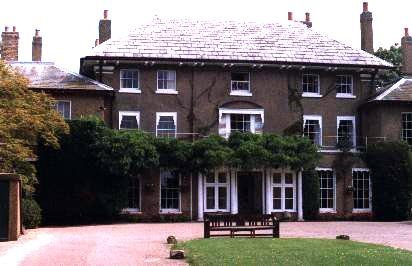
THE SAINT: The Elusive Ellshaw (John
Moxey: 1963)
Simon drives Anne Ripwell to Sir John's house in his Volvo for a
shooting weekend. That night Kenneth Ripwell runs out of the house to
his sports car and races off followed by Simon who chases him in his
Volvo.
THE AVENGERS: Two's A Crowd (Roy
Baker: May
1965)
Steed (Patrick Macnee) drops Mrs Peel (Diana
Rigg) off at Brodny's for
the cocktail party. Later, leaving the house, Mrs Peel overpowers
'Webster' (Patrick Macnee) and the two allies find
themselves attacked
by model planes.
THE AVENGERS: What the Butler Saw (Bill
Bain:
December 1965)
Steed (Patrick Macnee) posing as Major White
arrives in an armoured car
at Major General Goddard's home. Benson (John Le Mesurier)
leaves the
house and gets into a waiting taxi, Steed is picked up by Mrs Peel's
Lotus and they follow the taxi.
THE AVENGERS: The See-Through Man (Robert
Asher: November 1966)
Elena leaves the foreign embassy to meet Ackroyd in her DAF, and Mrs
Peel follows in her Lotus.
THE AVENGERS: You'll Catch Your Death (Paul
Dickson: April 1968)
Walsingham House, Residence of Colonel Timothy (retired).
RANDALL AND HOPKIRK
[DECEASED]: But What a
Sweet Little Room (Roy Ward Baker: Summer 1968)
Jeff and Julia visit the home of Anne Fenwick in Jeff's Vauxhall.
Film:
EDWARD, MY SON (July
1948)
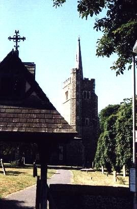
THE AVENGERS:
The Grave-Diggers
(Quentin Lawrence: March 1965)
Steed visits Pringby churchyard to see where Dr. Hubert Marlowe is
buried.
THE AVENGERS:
Split! (Roy
Baker: January 1968)
Steed drives along Hartspring lane in his Bentley and Aldenham is seen
in the background.
DEPARTMENT S:
The Pied Piper of Hambledown
(Roy Ward Baker: Summer 1968)
Stuart Sullivan visits the farm shop during his tour of Hambledown
whilst investigating the extent of the disappearances.
JOURNEY TO THE UNKNOWN:
Paper Dolls
(James Hill: 1968)
Craig Miller (Michael Tolan) and Jill Collins (Nanette
Newman) go to
the village in Rodney's painting to see Mrs Latham. Craig and Jill stay
at a local hotel (Church Farm).
Film:
MURDER AT THE GALLOP
(1963)
VILLAGE OF THE DAMNED
(1960)
Television:
PATHFINDERS: Fog (1972)
PATHFINDERS: For Better for Worse (1972)
AS TIME GOES BY (1992)
M9: Wall Hall, Aldenham (redeveloped as private flats)
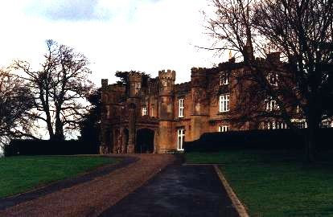
H. G. WELLS' INVISIBLE MAN:
Behind the Mask
(Pennington Richards: 1958)
Brady is lured to the home of the deformed Raphael Constantine.
THE SAINT: The Counterfeit Contessa
(Leslie Norman: January 1967)
Simon Templar breaks into the Contessa's villa at night; he later
escapes from the villa after being captured.
THE ADVENTURER:
Action! (Barry
Morse:1971)
Ann Somerby (Natasha Pyne) follows the van carrying
Bradley (Gene
Barry) John Campbell (John Collin), Carl
Bruner (David Lampton), Lola
Wells (Alexandra Bastedo) and Peter Maller (Bob
Cartland) to the house
where General McCreedy (Cec Linder) is staying. As
the others watch
Brady walks to the house, but he is intercepted by Ann who he sends for
help. When he reaches the house, Brady, calls the General out and
shoots him.
Television:
THE NEW ADVENTURES OF CHARLIE CHAN:
Charlie's Highland Fling
(1957)
Film:
NO TIME FOR TEARS
(1957)
THE NANNY (1965)
THE VAMPIRE LOVERS
(1971)
M10: Summerhouse Lane/Hilfield Lane, Patchett's Green
JOURNEY TO THE UNKNOWN:
Do Me A Favor and Kill Me
(Gerry O'Hara: 1968)
Jeff (Joseph Cotten) and Faith (Judy
Parfitt) arrive at their country
cottage for a weekend break.
(Spotted by Michael Richardson, 1989)
DEPARTMENT
S: A Fish Out of Water
(Cyril Frankel: April 1969)
Michele Duplay drives from Rafic’s villa to her flat in the Century
Building, Beirut, to collect her passport (Hilfield Lane just
after
junction with Summerhouse Lane).
(Identified by Geoff Dodd, November 2011)
M11: M1 Bridge, Sandy Lane/Hilfield Lane, Patchett's Green
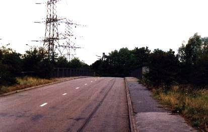
THE AVENGERS: Death's Door (Sidney
Hayers:
May 1967)
On the way to the conference centre, Sir Andrew Boyd asks Steed if he
has heard anything in the news about lions.
THE AVENGERS: Split! (Roy Ward
Baker: January
1968)
The Bentley drives rapidly over the motorway bridge.
(Spotted by Michael Richardson, 1989)
DEPARTMENT S: The Shift That Never Was (John
Gilling: Autumn 1968)
Kate Mortimer (Caroline Blakiston) and Douglas
Stayte (Eric Lander)
arrive at the unopened Northover Atomic Power Station. Stewart (Joel
Fabiani) and Jason (Peter Wyngarde)
arrive over the bridge, as does a
tanker which leaves with a valuable cargo.
M12: Aldenham Road, Letchmore Heath
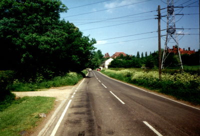
THE SAINT: Where the Money Is (Roger
Moore: Summer 1968)
As a blindfolded Simon Templar is taken to see Jenny the road can be
seen through the rear window.
THE AVENGERS: Requiem (Don Chaffey:
January
1969)
Firth (John Cairney) and Barrett (Mike
Lewin) stop their car opposite
the gates of what appears to be Steeds hideout.
UFO: The Responsibility Seat (Alan
Perry: September 1969)
Once he gets her in his car, Ed Straker gets the truth out Jo Fraser
(Aldenham Road opposite Aldenham School).
(Identified by Greg Chapman, 16th March, 2021)
UFO: Court
Martial (Ron Appleton: October 1969)
Ed Straker drives Alec Freeman, in his car, to Foster's apartment
(Aldenham Road opposite Aldenham School).
(Identified by Greg Chapman, 16th March, 2021)
JASON KING: An Author in Search of Two Characters
(Cyril Frankel: 1970)
Claire follows Eve’s car when she leaves the film studio
Film:
THE NUDIST STORY
(1960)
WHERE THE SPIES ARE
(1965)
M13: Players Cottages, Aldenham Road, Elstree
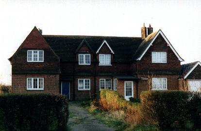
THE AVENGERS: Requiem (Don Chaffey:
January
1969)
Firth (John Cairney) and Barrett (Mike
Lewin) park outside the cottages
when they think that they have found Steed's retreat.
M14: The Battleaxes, Aldenham Road/Butterfly Lane, Elstree
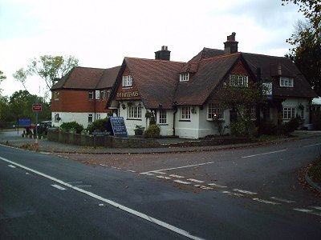
THE AVENGERS: Too Many Christmas Trees (Roy
Baker: February 1965)
Steed and Mrs Peel drive to Brandon Storey's house in the Bentley.
(Spotted by Michael Richardson, 1989)
THE SAINT: Flight Plan (Roy
Baker:
September 1966)
Simon's Volvo passes the pub as he races to prevent the theft of the
Osprey from the air base.
THE SAINT: The Organisation Man (Leslie
Norman: Spring 1968)
Whilst out training the Simon persuades a passing moped to give him a
lift to the local pub. The following evening Simon is followed to the
pub by Cable.
THE AVENGERS: Legacy of Death (Don
Chaffey:
July 1968)
Sidney Street (Stratford Johns) and Humbert Green (Ronald
Lacey) are
changing a flat tyre on their Ford Tudor, Sidney complains while
Humbert fixes the tyre and they set off down the road.
(Identified by Sam Denham, confirmed by Geoff Dodd, August
2012)
DEPARTMENT S: The Bones Of Byrom Blane (Paul
Dickson: 1968)
Byrom Blane's car passes a pub on the way to Marling Dale.
Film:
WINGS OF MYSTERY
(1962)
WHERE THE SPIES ARE
(1965)
NOT NOW COMRADE (1976)
M15: Dagger Lane, Elstree
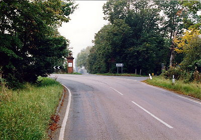
MAN FROM INTERPOL:
Soul Pedlars (Max
Varnel: 1959)
The car carrying Nichlos Hatvarny and Patrak is followed by Smith, Zita
and Inspector Muller as it leaves the hotel.
H.G.WELLS' INVISIBLE MAN:
Point of Destruction
(Quentin Lawrence: 1959)
Stefan (Derren Nesbitt) and Katrina (Patricia
Jessel) are ambushed by a
police car as they drive from the airport.
THE AVENGERS: The Murder Market (Peter
Graham
Scott: December 1964)
Steed and Emma drive off in a hearse to new adventures.
THE AVENGERS: The Master Minds (Peter
Graham
Scott: December 1964)
Steed and Mrs Peel arrive at Sir Clive Todd's house in the Bentley.
(Spotted by Michael Richardson, 1989)
THE AVENGERS: Death at Bargain Prices
(Charles Crichton: January 1965)
Steed and Emma pedal to new adventures on two bicycles.
(Spotted by Michael Richardson, 1989)
THE CHAMPIONS: The Invisible Man (Cyril
Frankel: May 1967)
Hallam's Mercedes drives towards Rotterdam.
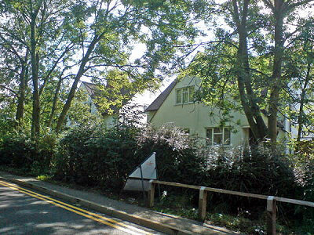
THE AVENGERS: Dead Man's Treasure (Sidney
Hayers: June 1967)
Nearly at the end of their quest Steed and Penny set off in the Bentley
for Benstead's. On the way Penny tells Steed an anecdote concerning a
rhinoceros (they pass houses just north of the blood products
centre in
back projection).
THE AVENGERS: Have Guns - Will Haggle (Ray
Austin: October 1967)
Tara's Lotus is chased by Conrad's Jaguar, almost being pushed into a
parked motor coach. Conrad is run off the road by Tara.
THE SAINT: The Man Who Gambled With Life
(Freddie Francis: Summer 1968)
Simon Templar drives his Volvo to the country for a quiet picnic, but
he is being followed by a Ford Transit van (they pass houses
just north
of the blood products centre in back projection). Simon turns
off the
main road and is followed by the van (from Dagger Lane on to
Hogg Lane).
THE AVENGERS: Killer (Cliff Owen:
September
1968)
Trouncer makes his escape in the back of a van.
DEPARTMENT S: A Small War of Nerves (Leslie
Norman: Spring 1969)
Stewart (Joel Fabiani) and Jason (Peter
Wyngarde) in the Vauxhall
survey the house where they think Halliday is prisoner.
HERE COME THE DOUBLE DECKERS!:
The
Go-Karters (Harry Booth: 1969)
A motorcycle policeman is waiting at the junction when he sees Spring's
go-kart fly past.
THE PROTECTORS: Talkdown (Jeremy
Summers: Early
1972)
The contessa is tracking Harry’s plane from her Rolls Royce.
(Spotted by Geoff Dodd, January 2018)
M16: Ham Farm Cottage, Dagger Lane/Hogg Lane, Elstree
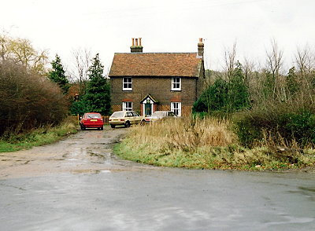
THE SAINT: The Man Who Gambled With Life
(Freddie Francis: Summer 1968)
Simon in his Volvo follows Stella Longman (Jayne Sofiano)
in her red
sports car from his flat. She loses him at a road junction when a
removal van pulls out in front of him.
M17: Elstree Aerodrome, Hogg Lane, Elstree
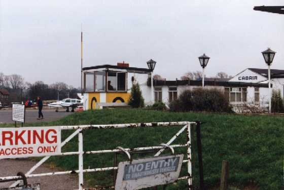
H.G.WELLS' INVISIBLE MAN:
Point of Destruction
(Quentin Lawrence: 1959)
Stefan (Derren Nesbitt) and Katrina (Patricia
Jessel) park by the
airport to watch the latest diffuser test flight.
H. G. WELLS' INVISIBLE MAN:
Flight Into Darkness
(Peter Maxwell: 1959)
Wilson and Sewell of the World Peace Organisation have kidnapped Doctor
Stephens and drive him to a plane waiting at Woodley airport near
Reading. Doctor Peter Brady and Pat, Stephens’ daughter, are hot on the
tail and follow the villains to and through the airport gates in his
Austin Healey. The police are not far behind and arrest Fisher (Alex
Scott), the pilot of the plane.
(Identified by Gary Loveday, February 2009)
DANGER MAN: The Island (Pennington
Richards: 1960)
A Chrisler Imperial delivers Bobby Palmer (Ann Firbank)
to the
airfield. Drake later escorts Wilson and Jones to the aircraft.
DANGER MAN: Don't Nail Him Yet (Michael
Truman: 1964)
Drake (Patrick McGoohan) and Peter Rawson (John
Fraser) are taken to
the airfield by Dian (Sheila Allen) and Lucus (Anthony
Dawson). They
get into a plane piloted by Dian, but Drake is able to escape with
Rawson by jumping from the plane. Drake runs back to the car and chases
after the plane.
DANGER MAN: Have A Glass Of Wine (Peter
Maxwell: 1964)
Suzanne and Lamaze arrive at an airfield in Burgundy, France, where
Lamaze will take a plane to Paris. Unknown to either of them, Drake is
the pilot of the plane and will fly him to London.
(Spotted by Jaz Wiseman, January 2006)
THE SAINT: The Damsel in Distress (Peter
Yates: Aug/Sep 1964)
With the police hot on their tail Allesandro, Guido and Simon Templar
(Roger Moore) drive the unconscious Guyiseppe
Rolfieri to Florence Aero
Club. Allesandro and Simon carry their victim to a waiting plane. Guido
bravely fends the police off with his car while the others make their
escape.
GIDEON'S WAY: The Alibi Man (Cyril
Frankel:
February 1965)
After previously dropping her off outside the aerodrome (Aldenham
Road)
Eric Little (James Culliford) picks up Marjorie
Bellman (Jennifer
Daniel) from the end of the runway before he takes off for
France.
THE BARON: The Legions of Ammak (John
Moxey: August 1965)
King Ibrahim's plane is waiting to take off when the Baron arrives in
his Jensen and boards the plane.
THE CHAMPIONS: The Gun-Runners (Robert
Asher:
February 1967)
Two policemen wait at a Belgian airfield for the arrival of
Hartington's plane.
THE CHAMPIONS: The Invisible Man (Cyril
Frankel: May 1967)
Hallam's Mercedes leaves the Dutch airport.
DEPARTMENT S: The Trojan Tanker (Ray
Austin:
Summer 1968)
Veronica Bray (Patricia Haines) lands at the
aerodrome after giving a
spectacular air display.
DEPARTMENT S: Handicap Dead (John
Gilling:
Summer 1968)
Annabelle goes to an airfield where Jason King is about to make a
parachute jump.
DEPARTMENT S: One of Our Aircraft is Empty
(Paul Dickson: 1968)
Stuart Sullivan (Joel Fabiani) goes to the private
aircraft of London
Airport to talk to a mechanic (Alan Hockey) about
anyone chartering
aircraft the previous night.
RANDALL AND HOPKIRK
[DECEASED]: A
Sentimental Journey (Leslie Norman: July 1968)
Dandy Garrison (Tracy Crisp) attempts to escape by
plane, but Marty
blows the craft out of her reach until the police arrive.
(Spotted by Michael Richardson, 1989)
THE SAINT: The Man Who Gambled With Life
(Freddie Francis: Summer 1968)
Stella Longman (Jayne Sofiano) arrives at the
airport in her red sports
car and is met by her sister, Vanessa (Veronica Carlson).
The two
sisters take off in a helicopter just as Simon arrives
RANDALL AND HOPKIRK
[DECEASED]: Money to
Burn (Ray Austin: Early 1969)
Anne-Marie Benson's plane takes off from a private airport in Surrey
and lands again after Marty's intervention.
THE SAINT: Double Take (Leslie
Norman:
April 1969)
The Saint and Patroclos race to Athens Airport to intercept the double
but arrive to late and watch as his plane takes off.
THE ADVENTURER:
Somebody Doesn't Like Me
(Cyril Frankel)
Buckley (Robin Hawdon) visits the aerodrome late at
night to sabotage
Gene Bradley's (Gene Barry) private jet.
(Spotted by Jaz Wiseman, January 2005)
THE PROTECTORS:
Talkdown (Jeremy
Summers: Early 1972)
Harry Rule (Robert Vaughan) is lured to an airfield
by Foster (Derren
Nesbitt) and left in an airborne 'plane when Foster
parachutes out.
Under guidance, Harry lands the plane and the Contessa (Nyree
Dawn
Porter) and Paul (Tony Anholt) hand
Foster over to Inspector Hill (John
Nettleton).
(Spotted by Michael Richardson, 1989)
RETURN OF THE SAINT:
Assault Force (Peter
Sadsey: 1978)
Simon (Ian Ogilvy) and Jim O'Hara (Bryan
Marshall) walk over to the
cafe after their parachute practice.
HAMMER HOUSE OF MYSTERY AND
SUSPENSE: A Distant
Scream (John Hough: December 1983)
Clifford (Stephen Greif) is followed to an airport
by the spectre of
Michael Harris as he makes his getaway by plane.
Film:
WINGS OF MYSTERY
(1962)
YOU MUST BE JOKING
(1965)
M18: Hilfield Castle,
Hilfield Lane, nr. Elstree
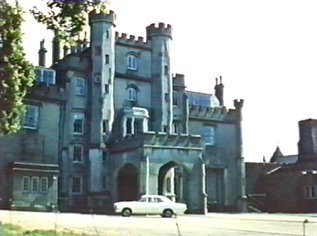
THE AVENGERS: Too Many Christmas Trees (Roy
Baker: February 1965)
Steed and Mrs Peel approach Brandon Storey's large country house.
THE BARON: So Dark the Night (Robert
Tronson: June 1966)
Establishing shots of Carl Grant's House.
RANDALL AND HOPKIRK
[DECEASED]: For The
Girl Who Has Everything (Cyril Frankel: Summer
1968)
Jeff's Vauxhall arrives at Kim Wentworth's mansion Crake Castle.
Film:
MURDER AT THE GALLOP
(1963)
Television:
DEAD RINGERS (200?)
LITTLE BRITAIN (200?)
M19: The International University, (formerly The Royal Masonic Senior School), The Avenue, Bushey
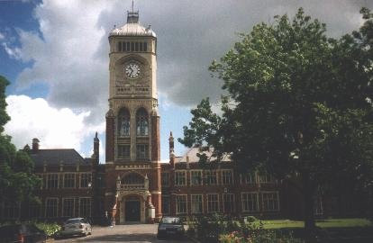
THE AVENGERS: A Sense of History (Peter
Graham Scott: January 1966)
Establishing shots of St. Bodes come from stock footage.
(Spotted by Michael Richardson, 1989)
THE AVENGERS: Death's Door (Sidney
Hayers:
May 1967)
The image of a lion at the conference centre causes the nervous Sir
Andrew Boyd (Clifford Evans) to bolt and get hit by
a car. Steed
(Patrick Macnee) and Lord Melford (Allan
Cuthbertson) arrive at the
conference, but Melford's case handle falls off. Steed and Mrs Peel
(Diana Rigg) arrive at the conference centre to
check out Melford's
nightmares.
(Spotted by Michael Richardson, 1989)
THE AVENGERS: The Return of the Cybernauts
(Robert Day: 22nd May, 1967)
A clock tower shows the time to be 4 o'clock as the cybernaut
approaches on it's first mission.
Film:
LUCKY JIM (1957)
IT'S GREAT TO YOUNG
(1956)
LIFEFORCE (1985)
Television:
DECEPTIONS (1985)
GRANGE HILL (1992)
BUGS: Jewel Control
(1998)
BRAMWELL: Loose Women (1999)
SPACED: Episode 5 (1999)
JUDGE JOHN DEED: Appropriate Response (2002)
MURDER ROOMS (????)
STRANGE (200?)
DR. TERRIBLE'S HOUSE OF HORRIBLE:
Lizard of Death (200?)
LITTLE BRITAIN (200?)
HARRY ENFIELD PRESENTS
(2001)
M20: Starveacres, Watford
Road, Radlett
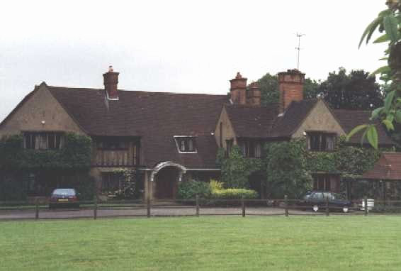
THE AVENGERS: Small Game for Big Hunters
(Gerry O'Hara:
September 1965)
Mrs Peel (Diana Rigg) parks her Lotus next to
Steed's
Bentley at Dr. Gibson's house in Hertfordshire (Starveacres
from the
front) and enters the house. Steed (Patrick Macnee)
and Mrs Peel step
out of the house drawn by the sound of distant drums. Professor Swain
(Liam Redmond) drives up to the house and is met by
Mrs Peel. Later Dr.
Gibson (A J Brown) is found paralysed in the
grounds of the house by
Mrs Peel. Steed decides to investigate the Kalayan Ex-Serviceman's
Association based in Colonel Rawlings house (Starveacres from
the rear)
which is just opposite Dr. Gibson's home.
THE AVENGERS: Escape in Time (John
Krish:
September 1966)
Thyssen arrives on the forecourt in both a carriage and on horseback.
Vesta (Judy Parfitt) arrives back at Thyssen's with
Steed in pursuit.
THE AVENGERS: Something Nasty in the Nursery
(James Hill: March 1967)
Webster (Paul Hardwick) and Collins (Patrick
Newell) arrive at
Beaumont's house, followed by Mrs Peel (Diana Rigg)
and Steed (Patrick
Macnee). Mrs Peel finds a wheelchair in the bushes.
THE AVENGERS: Have Guns - Will Haggle (Ray
Austin: October 1967)
Steed (Patrick Macnee) drives his Bentley to
Stockley House, and is
seen arriving by Nsonga (Johnny Sekka) and Giles (Roy
Stewart). Steed
shows Adrianna (Nicola Pagett) that he has the cash
with him.
M21: Common Lane, Letchmore Heath
THE SAINT: The World Beater (Leslie
Norman: Summer 1968)
Soon after setting off on the race Simon Templar and Kay Collingwood
find themselves travelling through a quiet suburb (back
projection of
Back Lane on to Common Lane).
(Identified by Geoff Dodd).
M22: Letchmore Lodge, Elstree Road
THE AVENGERS: Killer (Cliff Owen:
September
1968)
Lady Diana (Jennifer Croxton) arrives at the home
of Wilkington in her
MGB.
(Identified by Geoff Dodd, May 2005).
M23: Hilfield Lane
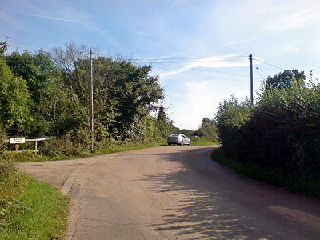
THE
AVENGERS: Death's Door
(Sidney Hayers: June 1967)
Melford gets a fright when a cyclist suddenly turns in front of his car
as he and Steed drive to the conference (Hilfield Lane
between Hilfield
Castle and Hilfield Farm).
(Iidentified by Geoff Dodd, April 2013)
THE AVENGERS: Split! (Roy Ward
Baker: January
1968)
Tara King (Linda Thorson) leaves Steed to go and
obtain a second
opinion on the handwriting sample (passing Hilfield Farm).
She drives
down a country lane in her AC 427. She sees an apparent traffic
accident (in the vicinity of Hilfield Castle). She
drives stops her AC
427 by the crashed Triumph and is immediately set upon by Himel (John
G. Heller) and an accomplice. The accomplice drives off in
Tara’s car
and an ambulance arrives carrying Doctor Constantine (Bernard
Archard).
DEPARTMENT S: The Shift That Never Was (John
Gilling: Autumn 1968)
The tanker leaves the atomic power station heading for its rendezvous.
Just later Stewart Sullivan and Jason King drive to the Northover
Atomic Power Station in the hope of finding Annabelle. They narrowly
miss hitting a tanker on the road (by Hilfield Cottages).
(Additional detail, Michael Richardson, January 2024)
THE AVENGERS: Requiem (Don Chaffey:
January
1969)
Major Firth (John Cairney), Lieutenant Barrett (Mike
Lewin) and Rista
(Terence Sewards) search for Steeds hideout near
Henley (their car
passing electricity pylons on Hilfield Lane).
M24: 16th Century Cottage, School Lane, Bricket Wood (modified in the 1980s)
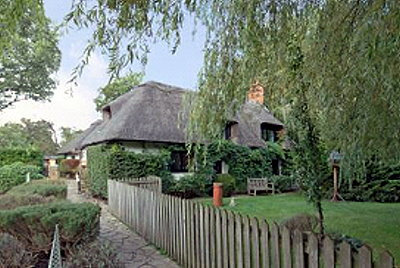
RETURN OF THE SAINT:
Assault Force (Peter
Sasdy: 1977)
Simon Templar (lan Ogilvy) drives Jeanette (Kate
O'Mara) to the safe
house in his Jaguar.
M25: Pegmire Lane, near the junction of Summerhouse Lane, Patchetts Green
THE AVENGERS: Split! (Roy Baker:
January 1968)
Pegmire Lane, near the junction of Summerhouse Lane, Patchetts Green -
After collecting Lord Barnes, who has arrived by helicopter, Tara King
drives him home in her AC Cobra.
(Identified by Matthew Hart, April 2010)
M26: The Tudor House, junction of The Avenue and Park Avenue, Radlett
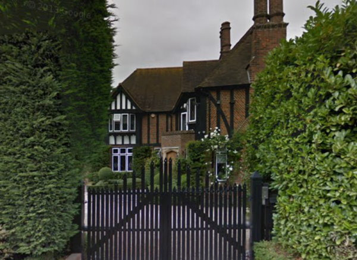
JOURNEY TO THE UNKNOWN:
The New People (Peter
Sasdy: 1968)
Hank Prentiss (Robert Reed) and Anne Prentiss (Jennifer
Hilary) move
into their new home, not suspecting that Matt Dystal (Milo
O'Shea) has
plans for them.
(Identified by Geoff Dodd, March 2014)

THE SAINT: The Saint Steps In (John
Gilling: March 1964)
Taxi with Miss Grey in arrives at Quinell’s house for an appointment.
two fake policemen are not far behind and stop her before she can get
to the house. Saint intervenes. Walter Devan is watching and only makes
himself known as the two detectives flee. Simon returns that night to
talk to Mr. Quinell and meets Andrea.
(Identified by Geoff Dodd, October 2018)
Films:
NIGHT OF THE DEMON
(1957)
M28: Netherwylde Farm, Watling Street, Radlett
GIDEON’S WAY: Boy With Gun (Jeremy
Summers:
May 1965)
Chris Kirk (Howard Knight) finds a farm and steals
some milk it is here
he first meets Vince Kelly (Michael Craze).
(Identified by Geoff Dodd, May 2020)